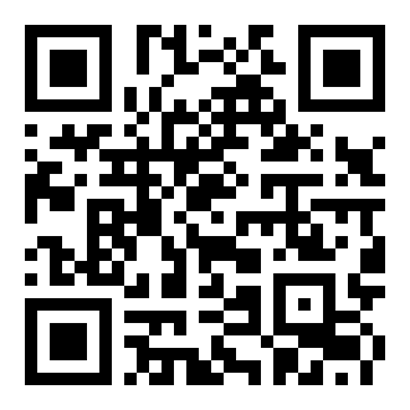
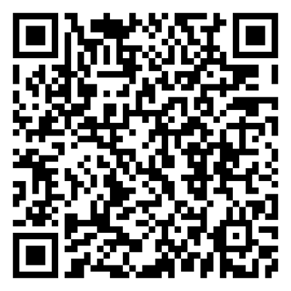
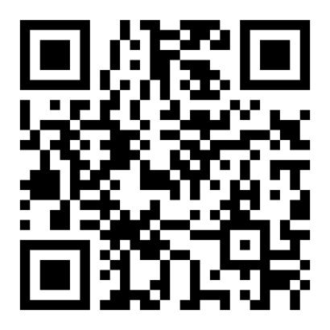

🔒 HTTPS/TLS y certificados digitales
Cuando un navegador se conecta a un sitio web mediante HTTP, la información viaja en texto plano: cualquier dispositivo intermedio en la red podría leer o modificar los datos. El protocolo TLS (Transport Layer Security) resuelve este problema añadiendo una capa de cifrado y autenticación sobre la conexión, dando lugar a HTTPS.
La confianza en una conexión HTTPS no depende solo del cifrado, sino también de los certificados digitales: documentos electrónicos firmados por una autoridad de certificación (CA) que garantizan que el servidor con el que se está hablando es realmente quien dice ser. En esta OVA se estudia el proceso de establecimiento de una conexión TLS, la estructura de la cadena de confianza y las buenas prácticas para gestionar certificados en un servidor web.
🔐 El candado del navegador es solo la señal visible de un proceso criptográfico completo que protege la confidencialidad e integridad de cada comunicación. ✅
🎯 Objetivos de aprendizaje
- 🧠 Explicar el funcionamiento del protocolo TLS y su papel en la protección de las comunicaciones web.
- 💡 Identificar los elementos de un certificado digital y el concepto de cadena de confianza.
- 🔧 Configurar la obtención e instalación de certificados TLS mediante una autoridad de certificación gratuita (Let's Encrypt).
- 📦 Detectar errores comunes de configuración TLS y aplicar la corrección adecuada.
✍️ Actividades
🧩 Actividad 1: Instalación de un certificado TLS (Individual)
Configure un servidor Nginx o Apache en un entorno local y obtenga un certificado TLS mediante Let's Encrypt (o un certificado autofirmado si no cuenta con un dominio público). Configure la redirección automática de HTTP a HTTPS y verifique la conexión desde el navegador.
📝 Producto esperado: evidencia (capturas) de la instalación del certificado y de la redirección HTTP a HTTPS funcionando.
🔎 Enfoque: aplicación práctica del proceso completo de emisión e instalación de un certificado TLS.
👥 Actividad 2: Análisis de un sitio real (Grupal)
En grupos de máximo tres integrantes, analicen la configuración TLS de un sitio web público utilizando una herramienta de análisis en línea. Identifiquen la versión de TLS utilizada, la autoridad emisora del certificado y su fecha de vencimiento. Presenten sus hallazgos en un informe breve con recomendaciones de mejora si corresponde.
📝 Producto esperado: informe breve con los hallazgos del análisis y recomendaciones de mejora.
👥 Modalidad: trabajo colaborativo en equipos de máximo tres estudiantes.
✔️ Evaluación
Cuestionario de autoevaluación para verificar la comprensión del handshake TLS, la cadena de confianza de certificados, la diferencia entre HTTP y HTTPS, y los errores comunes de configuración.
📎 Anexos
Material complementario asociado a los conceptos desarrollados en esta unidad.
-
🔏 Documentación oficial de Let's Encrypt
Guía oficial para la emisión y renovación automática de certificados TLS gratuitos.
Abrir anexo
-
🛡️ OWASP Transport Layer Protection Cheat Sheet
Recomendaciones de OWASP para la configuración segura de TLS en servidores web.
Abrir anexo
-
🧪 Qualys SSL Labs - SSL Server Test
Herramienta en línea para auditar la configuración TLS de cualquier servidor público.
Abrir anexo